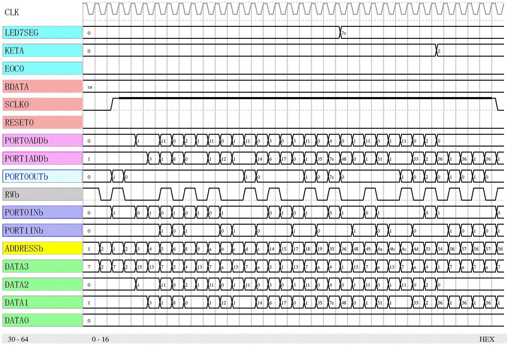

リスト82 はBCD 変換器の7 セグメントLED 表示に関わるプロセッサの部分です。このプロセッサのプロ グラムのインテルへクスデータは bcdb.hex です。
{ PPU 導入 } intb_ppu=ppu(RESET,DATAINb,PORT0INb,PORT1INb,INTb); intb_ppu.49=1; ADDRESSb=intb_ppu.0:7; PORT0ADDb=intb_ppu.16:23; PORT1ADDb=intb_ppu.24:31; PORT0OUTb=intb_ppu.40:47; RWb=intb_ppu.48; { PPU プログラム導入 } preparation codegendw(ADDRESSb,datainb,bcdb) DATAINb.0:7 =datainb.24:31; DATAINb.8:15 =datainb.16:23; DATAINb.16:23=datainb.8:15; DATAINb.24:31=datainb.0:7;
プログラムの実行の様子は 図4.32 のようになります。プログラムの実行位置はリスト81 の番地を 1/4 にして、その値の ADDRESSb を参照します。
